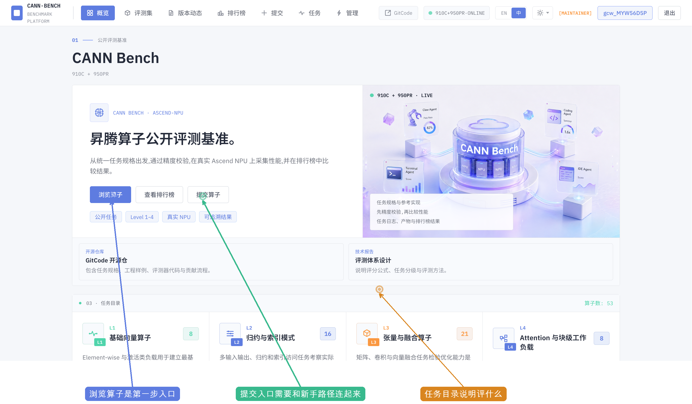
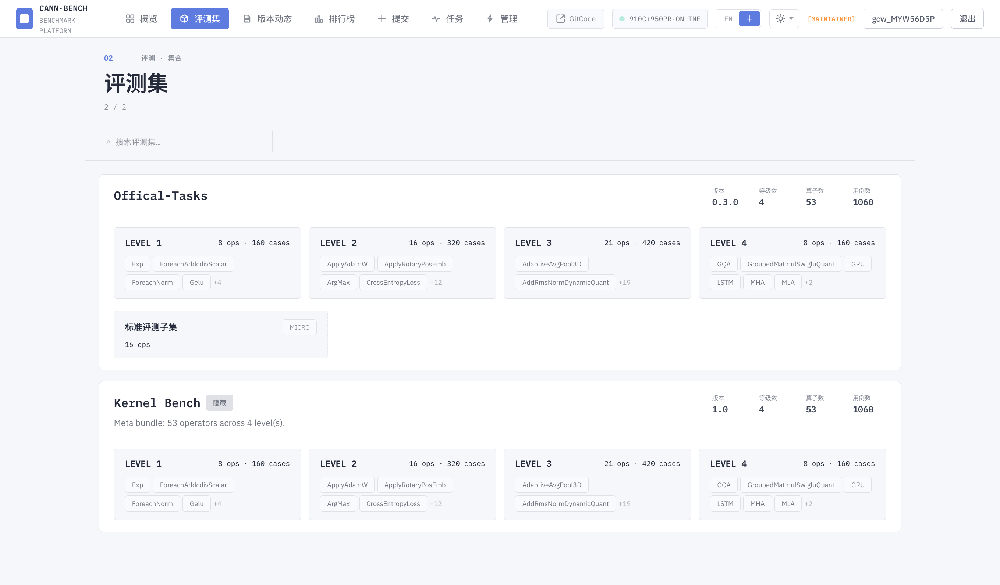
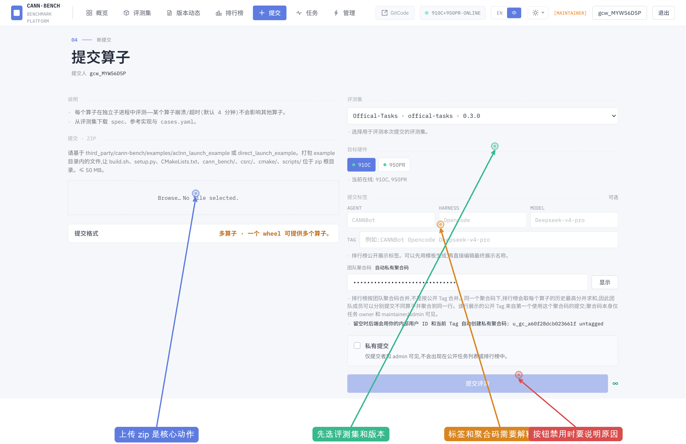
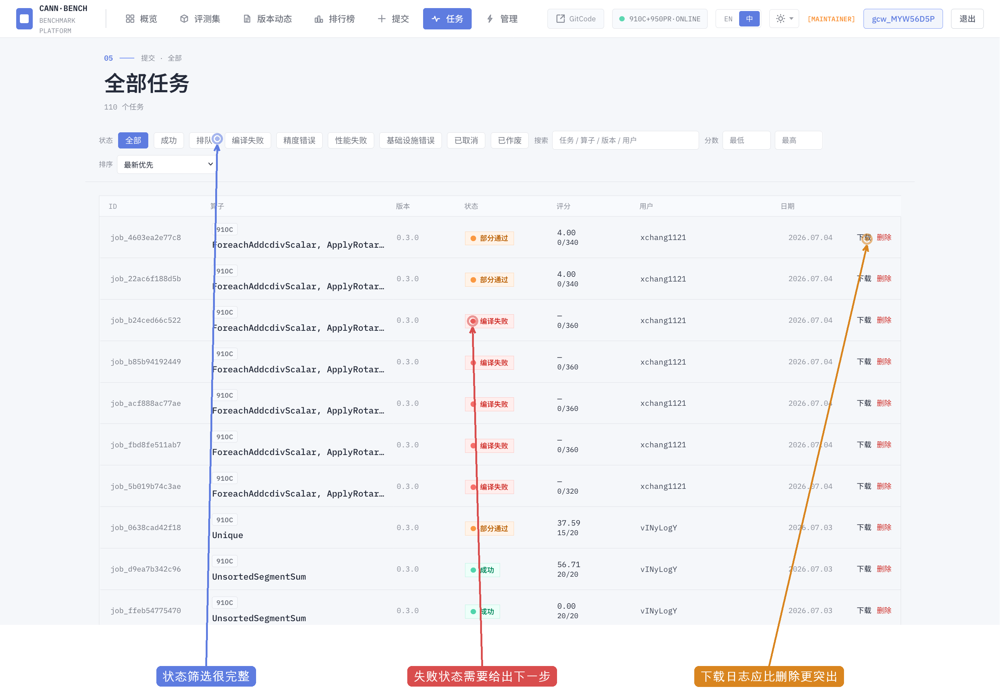
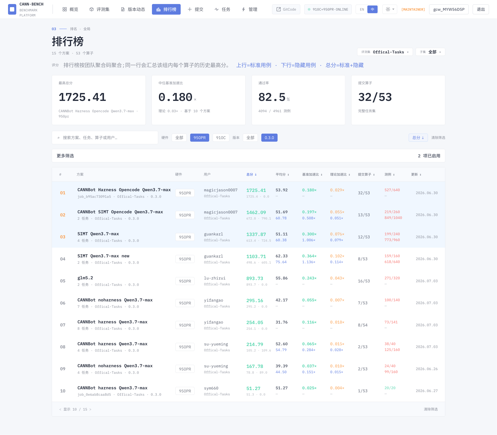
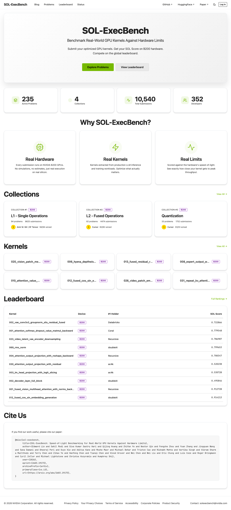
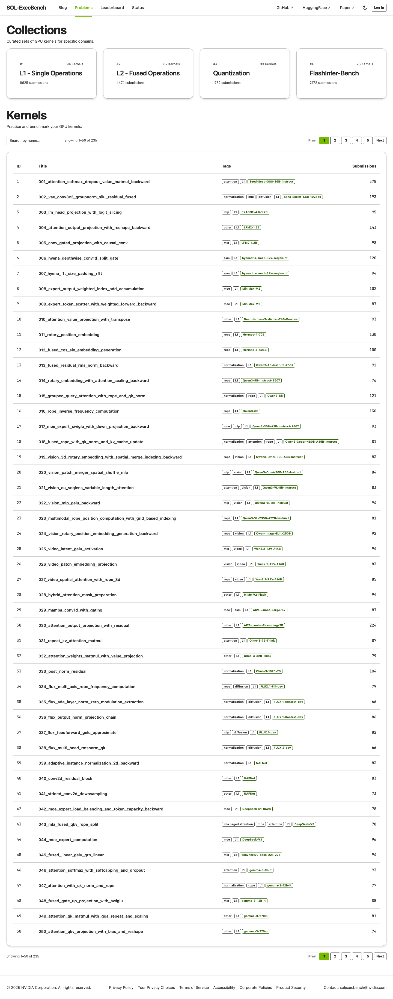
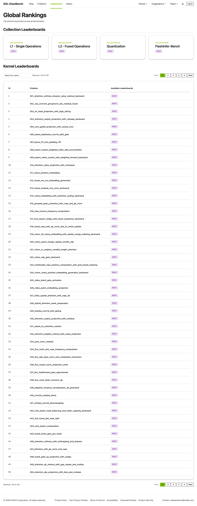
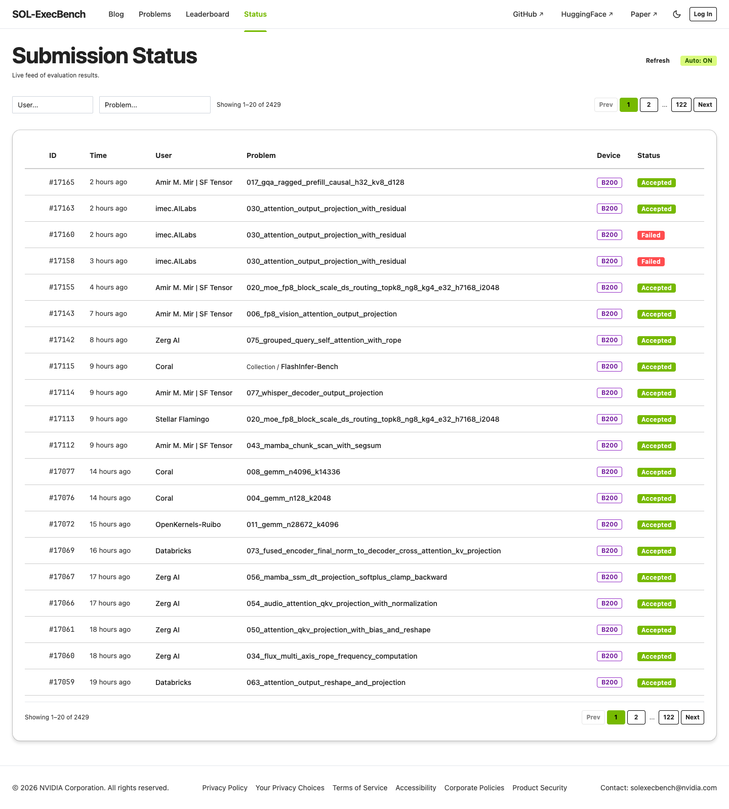
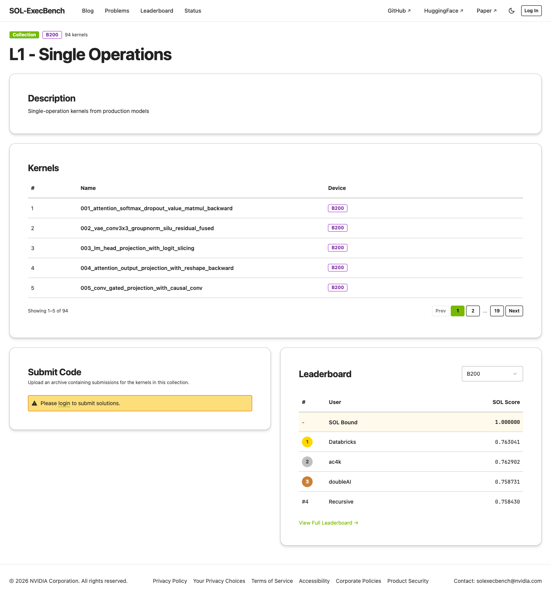

想知道评什么、如何打包 zip、提交后是否通过、失败后如何修复。这个用户需要清晰的任务步骤和可执行模板。
一、用户是谁，为什么来
CANN Bench 不是普通展示站，它本质上是一个面向 Ascend NPU 算子评测的任务工作台。用户最关心的是能否快速理解规则、准备提交、追踪结果，并把结果放入排行榜比较。
核心判断：前端已经实现了完整评测能力，包括模板说明、zip 预览、CLI、任务日志、产物、rerun、隐藏集和管理后台；体验问题主要来自路径组织和行动优先级。
想判断不同方案、硬件、任务子集的表现是否可信。这个用户需要可解释的排行榜和评测口径。
需要管理用户、配额、任务、评测包、子集和权限。这个用户需要高密度工作台，但也需要风险分层和安全确认。
二、前端文件暴露出的产品形态
生产包不是原始源码，但已经足以看到完整的信息架构、接口调用、角色权限和页面状态。它说明 CANN Bench 已经是完整工作台，不是普通展示站。
这次分析的重点从“截图里看起来怎么样”改为“前端能力如何支持用户完成一次评测闭环”。
前端包含评测集、bundle/reference/API description、zip 上传和预览、硬件选择、tag、聚合码、提交额度、CLI 脚本。
任务详情支持 compile、precision、performance、logs、artifacts、rerun、hidden rerun，但列表页没有把失败后的下一步显性化。
管理后台覆盖用户、配额、角色、评测包、子集、blog、维护模式、提交策略、分数刷新、安全报告，普通路径和后台路径需要分层。
三、主线用户旅程
最重要的路径不是浏览所有页面，而是从“知道规则”走到“提交后修复并提升排名”。
1了解规则确认 CANN Bench 是什么、硬件是什么、结果如何比较。
2选择任务进入评测集，找到 Level、算子、任务包和模板。
3准备 zip基于 ACLNN 或 Direct Launch 示例组织目录。
4提交评测上传 zip，选择硬件，填写标签和聚合码。
5追踪任务查看编译、精度、性能状态。
6诊断失败下载日志和产物，定位失败算子。
7比较排名理解总分、隐藏用例、提交算子数和硬件。
8再次提交修复后重提，并通过团队聚合码沉淀最好结果。
四、关键证据与问题
下面每个触点同时参考前端能力和桌面截图。评分满分 100，综合效率、认知负担、可执行性、可发现性和反馈闭环。

TP1 概览页：入口齐全，但第一次提交路径不够明确
72/100
P1
首页
新手引导
- 页面能说明平台定位，但用户还要自己推断“我应该先看任务，还是直接提交”。
- 任务目录、开源仓、技术报告都出现了，但它们没有形成清晰的行动顺序。
- 建议把首屏改成“开始一次提交”的任务入口，并加入 4 步路径：下载任务包、基于模板实现、上传 zip、查看结果。

TP2 评测集页：像目录，不像任务包中心
68/100
P1
评测集
模板入口
- 用户可以看到 Level 1-4 和算子数量，但“不知道从哪里拿到正确 zip 模板”。
- 前端 API 已经支持 bundle、reference、api-description、subsets，但列表页没有把这些作为一级入口。
- 建议每个评测集卡片增加：下载任务包、查看算子列表、查看提交模板、是否用于排行榜。

TP3 提交页：功能完整，但第一次提交路径不够显性
62/100
P0
提交
步骤流
任务流
- 前端已经有 zip 预览、ACLNN/Direct 模板说明、tag、聚合码、提交额度和 CLI；这些能力很有价值，但层级接近。
- 新用户仍要自己判断：先下载模板、先选评测集、还是先上传 zip。
- 建议改为分步表单：选择评测集 -> 下载/确认模板 -> 上传 zip -> 选择硬件 -> 标签/聚合码 -> 提交。

TP4 任务页：能看状态，但诊断闭环弱
63/100
P0
任务
失败诊断
- 状态筛选覆盖成功、排队、编译失败、精度错误、性能失败等情况，但用户看到失败后仍要自己找日志。
- 下载和删除按钮层级接近，存在误操作风险。
- 建议增加失败摘要、首个错误、查看日志、下载产物、复制重提命令，并默认提供“我的任务 / 全部任务”切换。

TP5 排行榜：数据丰富，但阅读成本高
66/100
P1
排行榜
指标解释
- 资深用户能看到完整指标，但新用户难以快速判断“谁真的更好”。
- 筛选和指标解释同时出现，认知负担偏高。
- 建议提供“快速看排名”和“深入分析”两种模式，默认突出总分、提交算子、通过率、更新时间。
五、问题热力图
最需要先改的是提交页和任务页，因为它们直接决定用户能否完成一次评测闭环。
触点
效率
认知负担
可执行性
可发现性
反馈闭环
概览页
较好
中
中
较好
中
评测集页
中
中
弱
中
中
提交页
弱
弱
中
中
弱
任务页
中
中
中
较好
弱
排行榜
中
弱
较好
中
中
账号页
较好
中
较好
中
中
六、竞品参考：NVIDIA SOL-ExecBench
补充采集了竞品的首页、Problems、Leaderboard、Status 和 Collection 详情页。截图均按 1440px 桌面整页标准采集，metadata 显示无 cookie 弹窗、无横向溢出。
参考结论：不要照搬视觉风格，而要学习它把“找题、看榜、看状态、找开源资源和论文”组织成清晰路径的方式。

首页：先说清楚价值和入口
首屏用一句话说明真实 GPU kernel 对硬件极限的评测，并把 Explore Problems 和 View Leaderboard 作为两个主入口。CANN Bench 首页也应先服务“开始一次提交”。

Problems：任务中心比目录更强
页面顶部是 collections，下面是可搜索、可分页的 kernel 表格和 tags。CANN Bench 的评测集页应升级为任务包中心，突出下载任务包、模板、API 和算子列表。

Leaderboard：先分层，再深入
竞品先给 collection leaderboard，再列 kernel leaderboard。CANN Bench 的排行榜指标更多，建议默认提供快速排名层，再展开标准/隐藏用例、加速比和提交算子数。

Status：公开运行状态增强信任
Status 是实时提交流，包含 ID、时间、用户、问题、设备和状态。CANN Bench 可借鉴这种透明度，但要同时保留“我的任务”和失败修复路径。

Collection：说明、题目、提交、榜单同页
L1 页面把 Description、Kernels、Submit Code、Leaderboard 放在同一页。CANN Bench 评测集详情可采用类似结构，但要强化 zip 模板、bundle、reference 和 cases.yaml。
CANN Bench 不能只做公开展示页。它的优势应落在登录态工作台：分步提交、zip 校验、任务诊断、日志产物、重提命令和团队聚合码。
迁移原则
学习竞品的信息架构，不复制它的产品定位。CANN Bench 的主线应是：评测集任务包 -> 提交 -> 任务诊断 -> 排行榜，而不是只让用户浏览内容。
七、中文版优先的改版优先级
先解决任务闭环，再降低理解成本，最后完善高级用户和维护者体验。英文版建议在中文结构稳定后同步。
P0：先修提交闭环
- 提交页改为清晰分步表单。
- 评测集页补强任务包、模板和 reference 入口。
- 任务页增加失败诊断和下一步操作。
P1：降低理解成本
- 首页增加首次提交路径。
- 排行榜增加快速/深入两种阅读模式。
- 排行榜增加指标解释和阅读模式。
P2：完善高级场景
- 账号页与 CLI 提交流程联动。
- 管理页做角色化分区和安全提示。
- 英文版按中文信息架构同步。
八、建议的新信息架构
当前导航更偏“展示站”。如果目标是提升提交成功率，导航应更贴近用户真实任务顺序。
建议导航顺序：概览 -> 评测集 -> 提交 -> 任务 -> 排行榜 -> 版本动态。
“管理”仅维护者可见，并在右侧独立成后台入口，避免和参赛者主路径混在一起。
“管理”仅维护者可见，并在右侧独立成后台入口，避免和参赛者主路径混在一起。
九、文件与素材位置
本报告引用的截图、标注图、生产前端包和页面抽取数据都已保存到工作区。
HTML 报告：analysis/ux-report.html
Markdown 底稿：analysis/ux-analysis-zh.md
前端文件审计：analysis/frontend-file-ux-audit-zh.md
桌面截图：evidence/user-screenshots/*.png
竞品截图：evidence/competitor-nvidia/*-skill-1440-fullpage-clean.png
标注截图：analysis/annotated/*.png
登录态页面数据：meta/logged-in-pages.zh.desktop.json
生产前端包：public/index.html、index-C5ax4_ra.js、index-CsThEqRM.css
Markdown 底稿：analysis/ux-analysis-zh.md
前端文件审计：analysis/frontend-file-ux-audit-zh.md
桌面截图：evidence/user-screenshots/*.png
{kind=link}
竞品截图：evidence/competitor-nvidia/*-skill-1440-fullpage-clean.png
标注截图：analysis/annotated/*.png
{kind=link}
登录态页面数据：meta/logged-in-pages.zh.desktop.json
生产前端包：public/index.html、index-C5ax4_ra.js、index-CsThEqRM.css